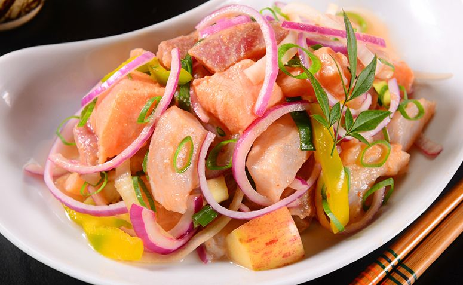

Receitas!
Curiosidades!
Ceviche de salmão!

Ingredientes:
500g de salmão;
1 cebola roxa grande;
1 xícara suco de limão siciliano;
1 pimenta dedo de moça;
Coentro a gosto;
Sal e pimenta do reino a gosto.
Instruções:
Corte a posta de salmão em pequenos cubos;
Coloque os cubos de salmão em um recipiente de vidro;
Adicione água gelada no recipiente e deixe o salmão "descansar" por 10 minutos;
Escoe toda a água e adicione 1/2 xícara do suco de limão;
Feche o recipiente com plástico film e leve a geladeira por 30 minutos;
Enquanto o peixe está na geladeira, corte a cebola roxa em plumas e guarde;
Pique o coentro e guarde-o;
Pique a pimenta dedo de moça em pequenos pedaços e guarde-a;
Retire o peixe da geladeira e adicione a cebola roxa, o coentro, a pimenta dedo de moça e adicione sal e pimenta do reino a gosto;
Misture suavemente;
Adicione o restante do suco de limão.